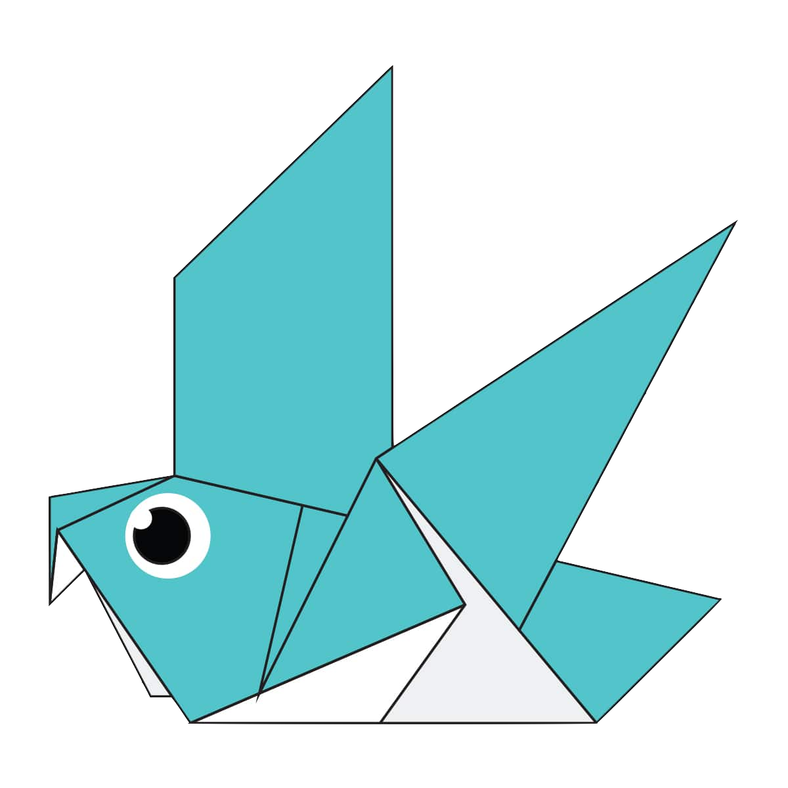

Press On the Image to know the steps of making it

Interesting facts about Camel
- Camels are social animals who roam the deserts in search of food and water with up to 30 other individuals
- Camels’ ears are small and hairy. However their sense of hearing is also extremely strong.
- In Arab cultures the camel symbolises patience, tolerance and endurance.

Interesting facts about Chameleon
- Chameleons are a very unique branch of the lizard group of reptiles.
- Chameleons live in warm varied habitats from rainforests through to deserts.
- Chameleons are not deaf but they do not actually have ear openings.

Interesting facts about Cicada
- They’re true bugs (from the order Hemiptera). So you can call them a bug and be scientifically accurate.
- Cicadas make noise like toy frogs
- Cicadas have one of the longest insect lifespans

Interesting facts about Panda
- They’re true bugs (from the order Hemiptera). So you can call them a bug and be scientifically accurate.
- Cicadas make noise like toy frogs
- Cicadas have one of the longest insect lifespans

Interesting facts about Pigeon
- Pigeons are highly sociable animals. They will often be seen in flocks of 20-30 birds.
- They can detect sounds at far lower frequencies than humans are able to, and can thus hear distant storms and volcanoes.
- Pigeons are incredibly complex and intelligent animals.

Interesting facts about Teddy
- The teddy was named after President Theodore Roosevelt, after he refused to shoot a bear during a 1902 hunting trip.
- The first British Teddy Bear Festival was held in 1989 in London.
- American multi-billionaire investor Paul Greenwood owned the largest collection of teddy bears.